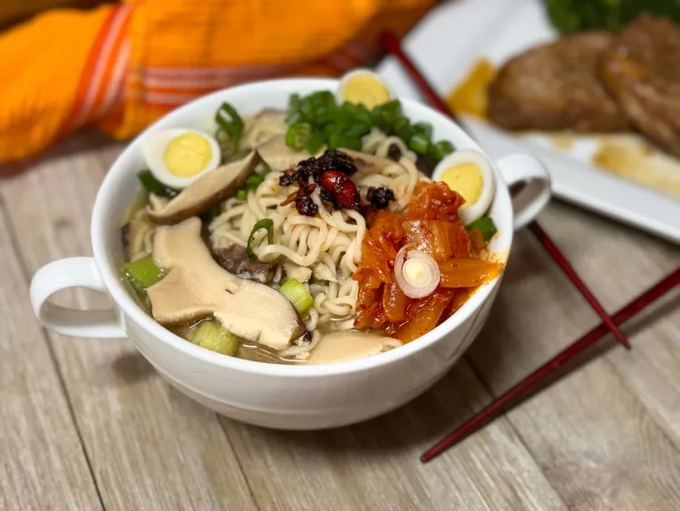

Home
Ramen

Mushroom Ramen
In this mushroom ramen, dried shiitake mushrooms season instant ramen broth while they hydrate, and you can toss that seasoning packet. Add a few more ingredients to give body to the broth, and then top with whatever you like best—kimchi, chopped green onions, chili crisp, soft or hard boiled eggs—for even more flavor. Quail eggs are a great size for this, but chicken eggs work, too.
Ingredients
- 8 cups water
- 2 cups dried shiitake mushrooms
- 1 tablespoon white miso paste
- 2 teaspoons soy sauce
- 2 teaspoons rice wine vinegar
- 1 clove garlic, minced
- 1/2 teaspoon ginger paste
- 2 (3.5-ounce) packages instant ramen noodles, seasoning packets discarded
Steps
- Bring water, mushrooms, miso paste, soy sauce, vinegar, garlic, and ginger to a boil in a large soup pot. Reduce heat to low and simmer for 25 minutes.
- Add ramen noodles and dunk in the broth until they no longer float to the top. Cook 5 minutes.
- Ladle into serving bowls and top with your favorite ramen toppings.